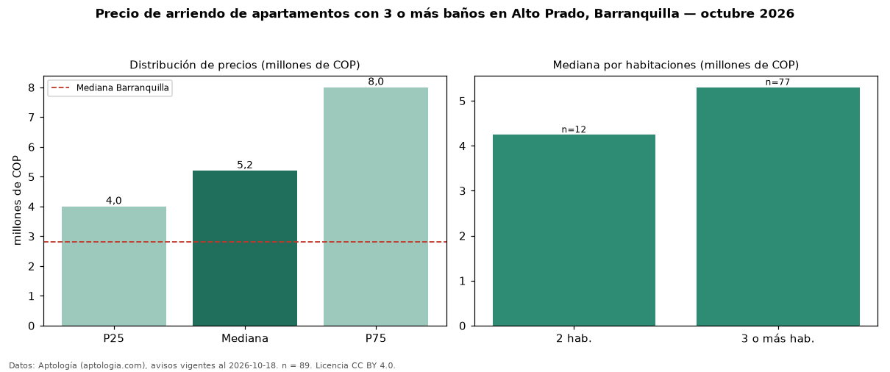

Precio de arriendo de apartamentos con 3 o más baños en Alto Prado, Barranquilla — octubre 2026
Con 89 avisos vigentes, el canon mediano de apartamentos con 3 o más baños en arriendo en Alto Prado, Barranquilla es COP 5,20 millones al mes. Eso es 39 % más que la mediana de todos los apartamentos en arriendo de Alto Prado (COP 3,75 millones, n = 169); este segmento reúne el 53 % de esos avisos. Por metro cuadrado, la mediana es COP 30.000/m² al mes (n = 85), 8 % por debajo del conjunto de referencia (COP 32.697/m²). El área mediana anunciada es 180 m². El segmento con más oferta es el de 3 o más habitaciones (77 avisos, mediana COP 5,30 millones); pasar de 2 habitaciones a 3 o más habitaciones cambia la mediana +25 %. La administración mediana declarada es COP 1,05 millones al mes (n = 41), aparte del canon. La mitad central de los avisos va de COP 4,00 millones a COP 8,00 millones (razón 2,0), una dispersión alta. El estrato más frecuente es 6 (65 % de los avisos con estrato). Datos: Aptología (aptologia.com), CC BY 4.0 — https://www.aptologia.com/arriendo/barranquilla/alto-prado. Archivos: PDF, CSV con las cifras y gráfica PNG.

| Avisos únicos | 89 |
|---|---|
| Percentil 25 | COP 4.000.000 |
| Mediana | COP 5.200.000 |
| Percentil 75 | COP 8.000.000 |
| Mediana por m² | COP 30.000 |
Fuente: avisos vigentes de portales inmobiliarios recopilados por Aptología, deduplicados (mínimo 30 avisos únicos por celda). Precios pedidos, no cerrados. Fecha: 2026-10-18.